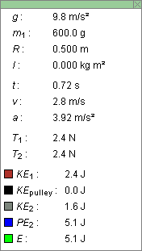
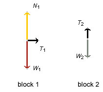
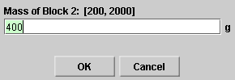
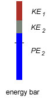

|
|
|
|
Click on a number to view the explanation of the corresponding item.
A number of assumptions underlie the applet. These are described in "Assumptions".
There are four basic control buttons. They are, from left to right:
 Rewind. Resets the simulation to the initial
position with the previously chosen initial values. If
you have the particle path displayed, Rewind will allow
you to compare paths traversed under different
conditions, e.g., different initial velocities.
Rewind. Resets the simulation to the initial
position with the previously chosen initial values. If
you have the particle path displayed, Rewind will allow
you to compare paths traversed under different
conditions, e.g., different initial velocities.
After clicking Rewind, click Play to restart the motion.
 Play/Pause. Starts the motion.
Play/Pause. Starts the motion.
After Play has been clicked, the button will change
into the Pause button  .
.
Clicking Pause will freeze the motion. To resume the motion, click Play once more.
 Step. Lets you step through the motion in equal
time steps.
Step. Lets you step through the motion in equal
time steps.
 Reset. Resets the applet to its default
setting.
Reset. Resets the applet to its default
setting.
Adjustments in the initial conditions can only be made after first clicking REWIND or RESET.


Selecting the Data button will open the Data box shown below. The box can be closed by clicking the "X" in the upper right-hand corner or by clicking the Data button a second time. The box can be dragged across the window.

The Data box displays the following values.
The two tension values are displayed in the Data box only when the free-body diagrams are displayed. See the following Point 3.

The FBD toggle button will display/hide the free-body diagrams for the two blocks. The diagrams can be dragged by clicking on their center points and dragging.
The free-body diagrams for Blocks 1 and 2 are shown in the following snapshot.

The free-body diagrams in the snapshot above apply at a moment when the blocks are in motion. The diagrams look different when the blocks are being dragged. In the latter case, force vectors whose magnitudes are undetermined are shown dimmed and their labels are shown with question marks. The free-body diagrams also look different when the blocks are held before the start of the motion or when Block 2 is resting on the platform. For details, please go to "ShowMe".
Values for the tensions T1 and T2 are displayed in the Data box. See Point 2 above. These values are replaced by question marks when unknown forces are present in the physical situation that is being simulated.
The Magnifier button allows you to change the scale of the energy bar. Clicking on the button repeatedly will let you cycle through the magnification factors 1X, 2X, 3X, 4X, 0.5X, and back to 1X.
There are two sliders, shown in the following image. Clicking on a slider to the left or right of the slider tab allows fine adjustment of the slider setting.

Clicking on the Input Dialog button  of a slider will open a dialog for entering an
exact value for the slider setting. The dialog for the
slider that sets the mass of Block 2 is illustrated
below. The range in which values can be entered, from 200
g to 2000 g in this case, is indicated above the data
entry field.
of a slider will open a dialog for entering an
exact value for the slider setting. The dialog for the
slider that sets the mass of Block 2 is illustrated
below. The range in which values can be entered, from 200
g to 2000 g in this case, is indicated above the data
entry field.

The two sliders allow you to adjust the values of the following quantities.
The speedometer indicates the speed v of the blocks by a red needle moving horizontally. The range of the speedometer is from 0 to 10 m/s. The value of the speed is displayed in the Data box (Point 2).
The yellow platform can be dragged up or down to positions of either positive or negative elevation h.
The values of the energies are displayed graphically by means of an energy bar:

The individual energies are color-coded. The total height of the energy bar, measured from the zero-level indicated by the short horizontal line across the energy bar, represents the energy E. In the situation represented above, the moment of inertia of the pulley and therefore the kinetic energy of the pulley are zero. Therefore the energy bar contains no segment for the pulley's kinetic energy.
The energy bar can be scaled by clicking the magnifier button repeatedly.
Note. The potential energy is 0 when h = 0. For details, please go to "Assumptions".
Initially, or after clicking REWIND or RESET, you can move Block 1 by clicking on it and dragging it. Block 2 will automatically move also, so that the connecting string stays taut. A marker next to the h-scale displays the elevation of the lower edge of Block 2.